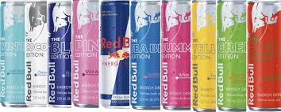
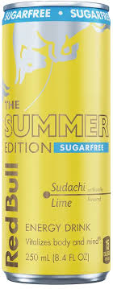
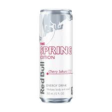

Redbull is amazing because it can give a boost in energy,mood,hydration, and it tastes amazing.

The newest flavor is sudachi lime, its more sour then sweet is for the summer edition, they are also really cheap.

Cherry sakura is the best summer flavor in my opinion, it tastes like real fruit, its sweet and then a little sour, and it is the 2nd newest flavor for spring/summer. Its also very cheap averaging 2.50$-3.79$ at certain locations. I recommend it since its cheap and there is also sugarfree and regular for people who cant+ have too much sugar.
